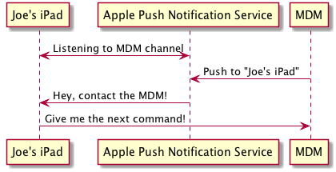

This section is intended to give you some basic knowledge around how MDM works, so that you understand why some of the prerequisites exist.
Setting up an MDM requires a few different certificates:
Note
I’m glossing over a lot of detail to give you a general sense of the requirements.
By far, the best in-depth explanation is the MicroMDM Blog post by Jesse Peterson on Understanding MDM Certificates.
Apple devices listen for Push Notifications, sent via Apple’s Push Notification Service [1]. The notifications you send from your MDM are used to poke the devices, which contact your MDM in turn.

To send MDM push notifications, you will need a special Push Certificate issued by Apple.
There are several ways to get one:
The MDM protocol requires a secure encrypted connection between your devices and your MDM.
The TLS certificate on your MDM is just like any other web server, so all the same methods apply for getting one of these certificates.
It’s recommended to purchase an SSL certificate that will already be trusted by your devices. You can also use an Enterprise CA, as long as you understand that there’s an extra step to allow your devices to trust the CA.
Warning
If you are using a self-signed SSL certificate, or your Enterprise CA won’t automatically be trusted by your devices, then you need to make sure your devices trust the certificate. This is normally done by pushing a trust profile or including trust information in the enrollment profile.
commandment has an option to bundle these certificates with the enrollment profile.
The MDM protocol requires that each device enrolled with the MDM has its own certificate.
There are two options for providing the identity certificate:
The second option is always the preferred method, since it allows you to use whatever existing infrastructure you have for issuing certificates.
Footnotes
| [1] | Push Notification Developer Guide. |